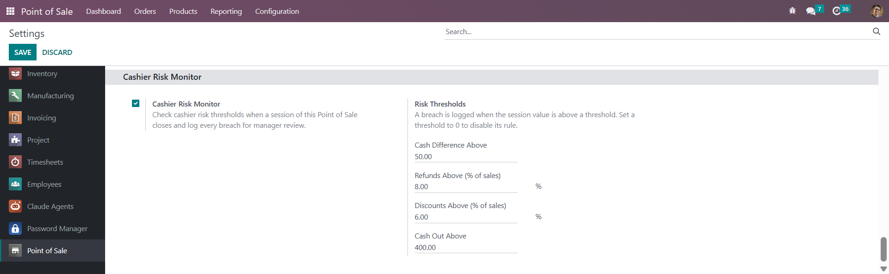
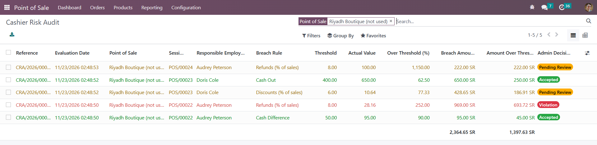
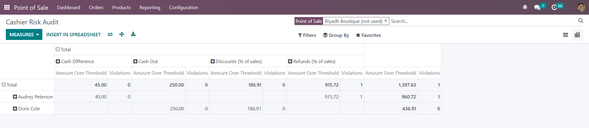
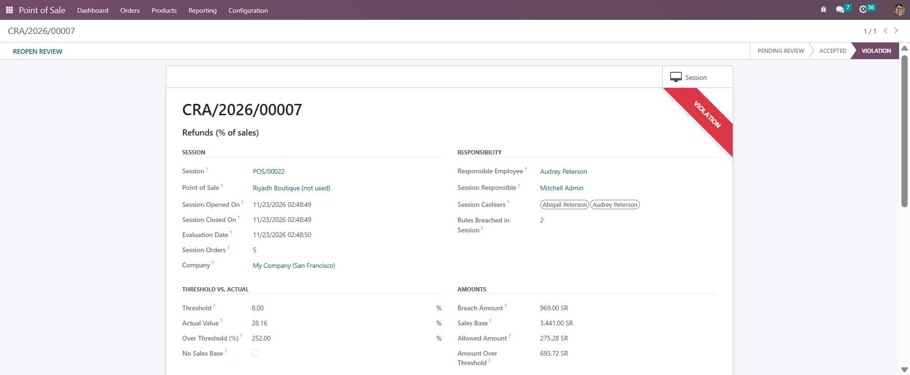
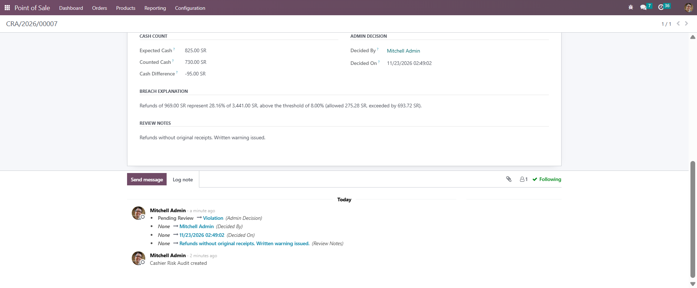
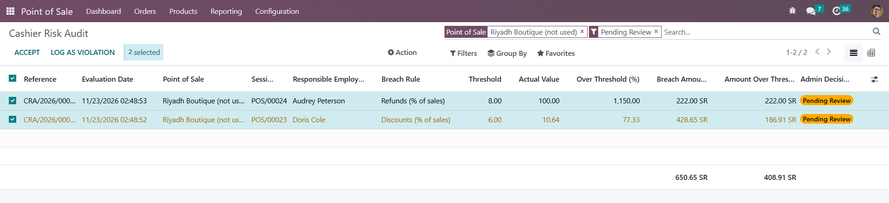
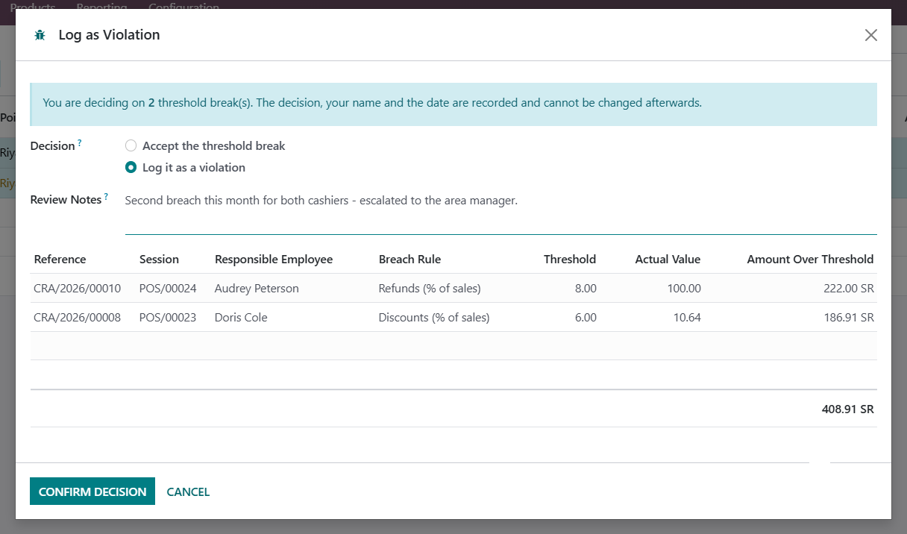
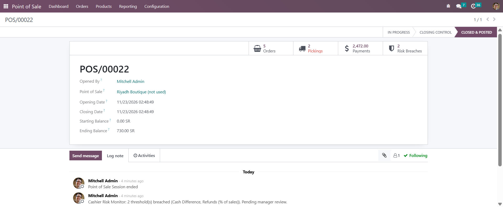
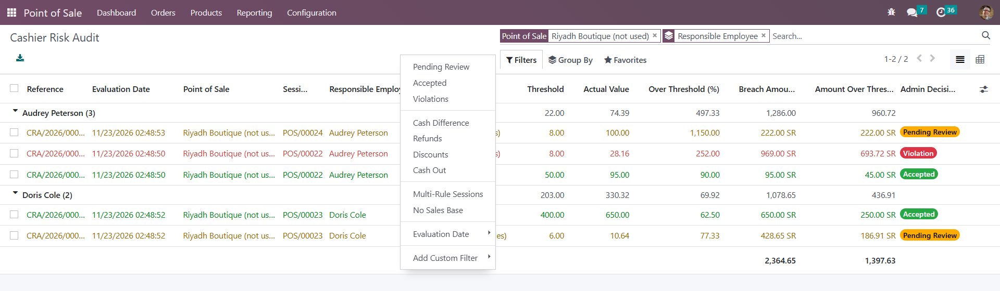

Every time a POS session closes, its cash difference, refunds, discounts and cash outs are checked against your limits. Each breach is logged against the responsible cashier, and a manager then accepts it or records it as a violation.
Odoo 20 records what happened in a session, but nothing tells a manager that a session went beyond what the store tolerates.
Four steps, and the cashier sees no change to the closing screen.
The screenshots come from a demo Riyadh Boutique POS with three cashiers (Audrey Peterson, Doris Cole, Abigail Peterson) and four closed sessions. One of those sessions was clean and logged nothing.
| Menu | What you do there |
|---|---|
| Point of Sale › Configuration › Settings › Cashier Risk Monitor | Enable the monitor for the selected POS and set its limits |
| Point of Sale › Reporting › Cashier Risk Audit | List, pivot and form views of every breach, with Accept / Log as Violation |
| Point of Sale › Orders › Sessions › Risk Breaches button | Jump from a closed session to its breaches |
Tick Cashier Risk Monitor, which is off by default, and set Cash Difference Above, Refunds Above (% of sales), Discounts Above (% of sales) and Cash Out Above. Negative values, percentages over 100 and “enabled with every limit at 0” are rejected with a clear message.

Each row is one breached rule in one session. It shows the Threshold, the Actual Value, Over Threshold (%), the Breach Amount and the money Amount Over Threshold. Colours follow the Admin Decision: amber for pending, green for accepted, red for violation. Totals sum across rules because every rule is converted to money.

By default, rows are Responsible Employee and columns are Breach Rule. The measures are Amount Over Threshold and a Violations count, with Breach Amount, Allowed Amount and more one click away. Use Insert in Spreadsheet (Enterprise) or export to Excel.

The form shows the session, its opening and closing times, the Responsible Employee, all Session Cashiers and how many Rules Breached in Session. It also shows the threshold against the actual value, the sales base, the allowed amount, and the expected and counted cash. A ribbon shows the decision.


Select pending entries in the list and click Accept or Log as Violation. The decision window lists the selected breaches and the total amount over threshold, and takes optional Review Notes. Only entries still Pending Review can be decided, and a decision cannot be changed afterwards. Administrators can Reopen Review.


Closed sessions get a Risk Breaches button, visible to managers only. The chatter receives a note listing the rules that were breached.

Filters: Pending Review, Accepted, Violations, one per rule, Multi-Rule Sessions, No Sales Base and Evaluation Date. Group by Session, Point of Sale, Responsible Employee, Breach Rule, Admin Decision, Decided By or Evaluation Month.

All sales figures include tax and are in the session currency. A breach means the value is strictly above the limit.
| Rule | Measured value | Responsible employee |
|---|---|---|
| Cash Difference | |counted cash − expected cash| at closing (POS with cash control) | Session’s main cashier (most orders) |
| Refunds (% of sales) | Refunded lines ÷ net sale lines × 100 | Cashier with the largest refunded amount |
| Discounts (% of sales) | (line discounts + global discount + loyalty rewards) ÷ sales before discount × 100 | Cashier with the largest discounted amount |
| Cash Out | Sum of cash outs made with the POS Cash In/Out button | Session’s main cashier |
Each case is handled in the module and covered by its automated tests.
Cashiers never see their own audits. The entries are created by the system at closing.
| Who | Sees / can do |
|---|---|
| Point of Sale / User (cashier) | No access to the report, the menu or the session button. Closing still creates the entries. |
| Point of Sale / Administrator | Reads all entries, adds review notes, and can Accept or Log as Violation. Cannot create or delete entries. |
| Settings (system administrator) | Everything above, plus Reopen Review and deleting entries that are still pending. |
| Multi-company | An access restriction limits entries to the user’s allowed companies. |
| Odoo version | 20.0, Community and Enterprise |
| Depends on | point_of_sale, hr (works with pos_hr, pos_discount, pos_loyalty when installed) |
| Python dependency | None |
| Menus | Point of Sale › Reporting › Cashier Risk Audit |
| Settings | Point of Sale › Configuration › Settings › Cashier Risk Monitor (per POS) |
| Models | New: pos.cashier.risk.audit, pos.cashier.risk.decision.wizard. Extended: pos.config, res.config.settings, pos.session, account.bank.statement.line |
| Languages | English and Arabic (full i18n/ar.po), plus a .pot template |
| Automated tests | 12 TransactionCase tests covering the default-off setting, threshold validation, each of the four rules, zero sales, responsible employee, multi-rule sessions and duplicates, decisions and access rights, a real session close, and list/pivot totals |
| License | LGPL-3 |
Questions, a demo, or an adaptation to your own process? Get in touch.
✉ ibrahim.yahiah@gmail.com LinkedIn: Ibrahim YahiaAuthor: Ibrahim Yahia · License: LGPL-3